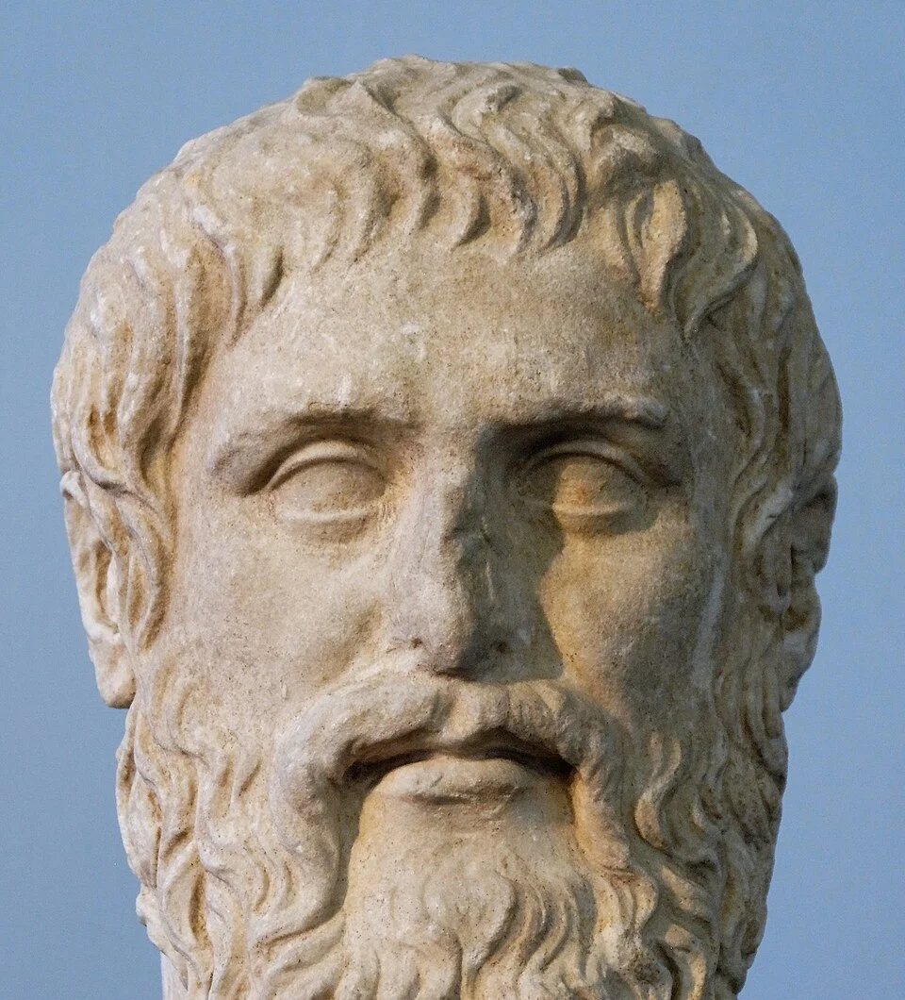
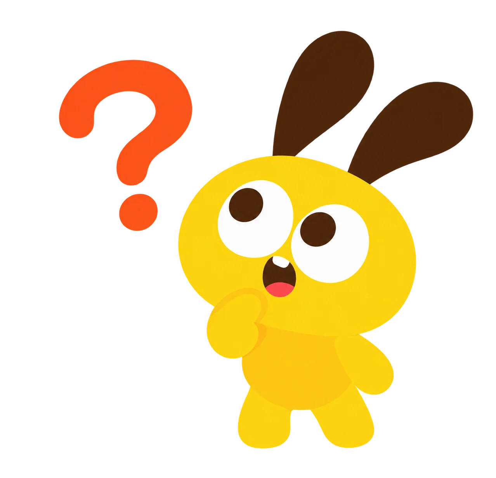
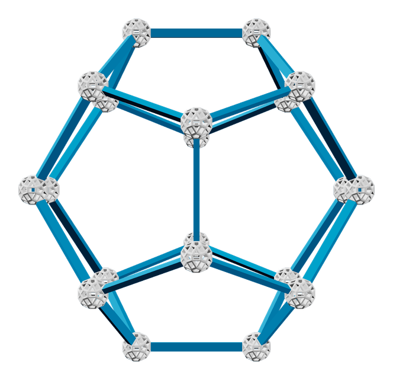

柏拉图多面体


柏拉图多面体
Zometool 拼搭课 · 第 10 节
为什么叫「柏拉图」多面体？
公元前 6 世纪
毕达哥拉斯学派
传说最早研究正多面体，认识了其中几种
公元前 4 世纪
泰阿泰德
柏拉图的朋友，找到八面体和二十面体，最早证明只有 5 种
约公元前 360 年
柏拉图
写进《蒂迈欧篇》，用它们解释整个世界

约公元前 300 年
欧几里得
写进《几何原本》最后一卷，再次证明只有 5 种
柏拉图让它们出了名，所以叫「柏拉图多面体」。
柏拉图多面体，就是这 5 位
正四面体
立方体
正八面体
正二十面体
正十二面体
它们是「正多面体」！
① 每个面都是同一种正多边形，大小完全相同
② 每个顶点旁的拼法，处处相同
柏拉图的大胆猜想：世界是搭出来的？
亲手拼搭多面体
1
第 1 位：正四面体

第 2 位：正八面体

第 3 位：正二十面体

为什么只有 5 种正多面体？
2
侦探时间：面和顶点有什么规律？
挑战：三角形能加到几个？

换正方形：4 个可以吗？
正五边形：4 个可以吗？

正六边形呢？Zometool 拼不出它
总结：能鼓起来的，正好 5 种
3 个↓
正四面体
4 个↓
正八面体
5 个↓
正二十面体
3 个↓
立方体
3 个↓
正十二面体
拓展：平铺开来，就是「密铺」
「密铺」：不留空、不重叠，铺满整个平面。
6 个正三角形围一个顶点 · 越拼越大
4 个正方形围一个顶点 · 越拼越大
3 个正六边形围一个顶点 · 越拼越大
把发现带到生活里
3
自然界里，也有伙伴吗？


黄铁矿
萤石
拓展：数一数顶点、棱和面
| 形体 | 顶点 V | 棱 E | 面 F | V+F−E |
|---|---|---|---|---|
| 正四面体 | 4 | 6 | 4 | 2 |
| 立方体 | 8 | 12 | 6 | 2 |
| 正八面体 | 6 | 12 | 8 | 2 |
| 正十二面体 | 20 | 30 | 12 | 2 |
| 正二十面体 | 12 | 30 | 20 | 2 |
总结：欧拉公式
F + V − E = 2
五种正多面体，全部成立：顶点数 + 面数 − 棱数 恒等于 2
今天我们从"只有 5 种"出发，搭出了三位伙伴，发现了立方体里的秘密，还用数据检验了一个宇宙猜想。
1
观察：找一找生活里的嵌套结构，拍 3 张照片。
2
探究：剩下 4 个角也能连成正四面体吗？两组同时插入会怎样？画图研究。